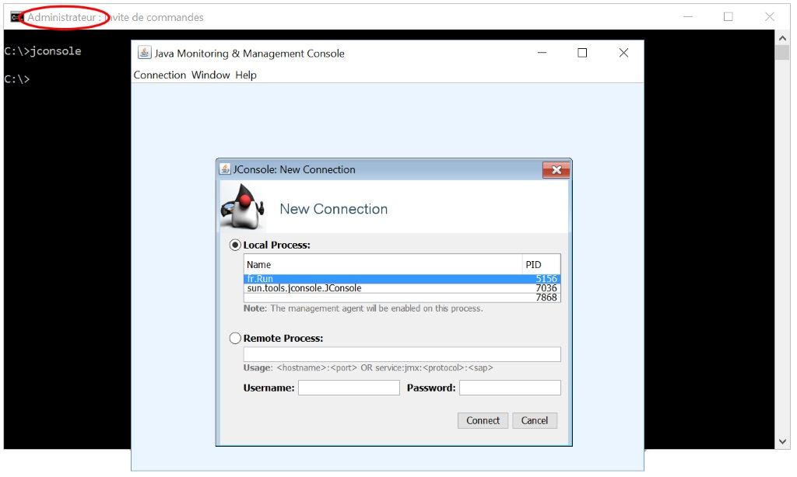
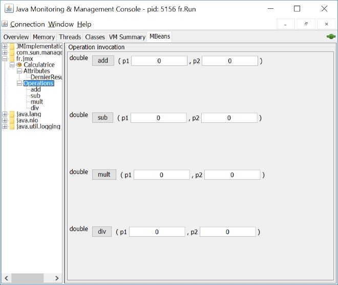

JMX est la norme Java qui permet de mettre à disposition des beans dans un programme afin de les manipuler à distance à travers différents protocoles.
Créez un nouveau projet Java standard (ou Maven que vous ajusterez pour être en Java7 minimum, il n'y a pas de dépendance particulière à indiquer).
Créez une nouvelle classe fr.jmx.Calculatrice, son rôle sera de représenter une calculatrice. Elle aura par exemple :
Créez une nouvelle interface fr.jmx.CalculatriceMBean, son rôle sera de représenter la classe Calculatrice. Générez l'interface via Eclipse, menu refactor/extract interface.
Important : afin de respecter la norme JMX, cette interface doit impérativement finir par MBean.
Créez une classe fr.Run avec une méthode main.
Nous allons y créer un bean Calculatrice, le référencer dans un serveur de bean JMX et attendre que quelqu'un s'en serve.
Exemple de code :
...
MBeanServer mbs = ManagementFactory.getPlatformMBeanServer();
try {
// Nom de l'objet
ObjectName name = new ObjectName("fr.jmx:type=Calculatrice");
// Construction de l'objet
CalculatriceMBean mbean = new Calculatrice();
// Inscription de l'objet
mbs.registerMBean(mbean, name);
// On attend
System.out.println("Maintenant, ouvrez un shell et lancez jconsole");
Thread.sleep(Long.MAX_VALUE);
} catch (Exception e) {
e.printStackTrace();
}
...
Après avoir lancé votre classe Run, ouvrez un shell en tant qu'administrateur (Invité de commandes sous Windows), tapez jconsole.
Si rien ne se passe, allez dans le répertoire bin de votre JDK et relancez la commande (ou ajustez votre variable PATH en y incluant le %JAVA_HOME%\bin).
Sous certain OS, il faut être administrateur pour avoir le droit de lister les processus Java.
Vous devriez voir votre processus Java (fr.Run) dans la liste, cliquez dessus puis Connect.
Allez surl'onglet MBeans et retrouvez votre bean Calculatrice.
Jouez avec et regardez ce qui lui arrive.
N'oubliez pas de killer votre processus (carré rouge dans Eclipse) quand vous aurez terminé.